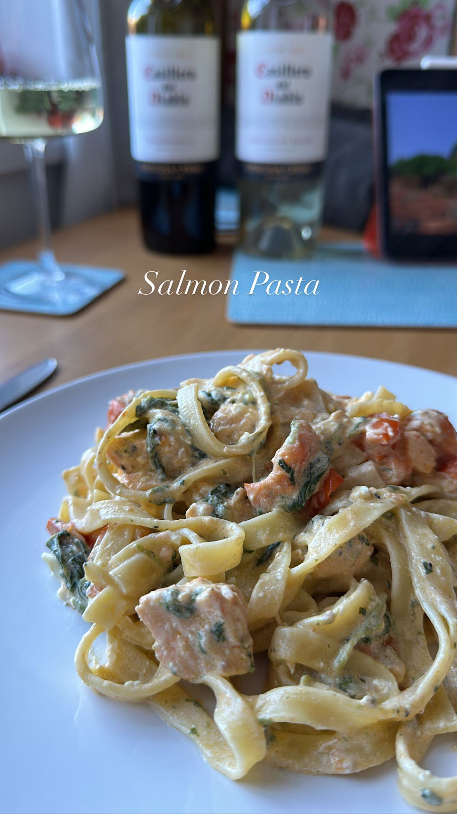

Salmon Pasta
A self-devised recipe with a sharp twang of lemon against the creamy taste of feta.

Ingredients:
- 150g dry tagliatelle or another pasta of choice
- 100g feta, cubed
- 150g of cherry tomatoes, halved
- 200g baby spinach leaves
- 1 tablespoon Extra Virgin Olive Oil
- 2 tablespoons Lemon Juice
- 2 salmon fillets, skinned and cut into small chunks
- Salt and Pepper to taste
Steps:
- Cook your choice of pasta according to the instructions on the pack, adding 1 tablespoon of lemon juice to the pasta water
- In a Wok, add olive oil, salt, pepper, cherry tomatoes and salmon chunks. Cook on a low heat for about 5 minutes or until the salmon is cooked through, stirring occasionally.
- Add your feta cubes to the wok and reduce the heat. Keep it moving while the feta melts down.
- Drain the cooked pasta and add to the wok. Stir through thoroughly, coating the pasta with the feta.
- Gradually add the spinach to the pan and fold through, allowing time for it to wilt down.
- when the spinach has wilted, serve on two plates and add salt and pepper to taste.